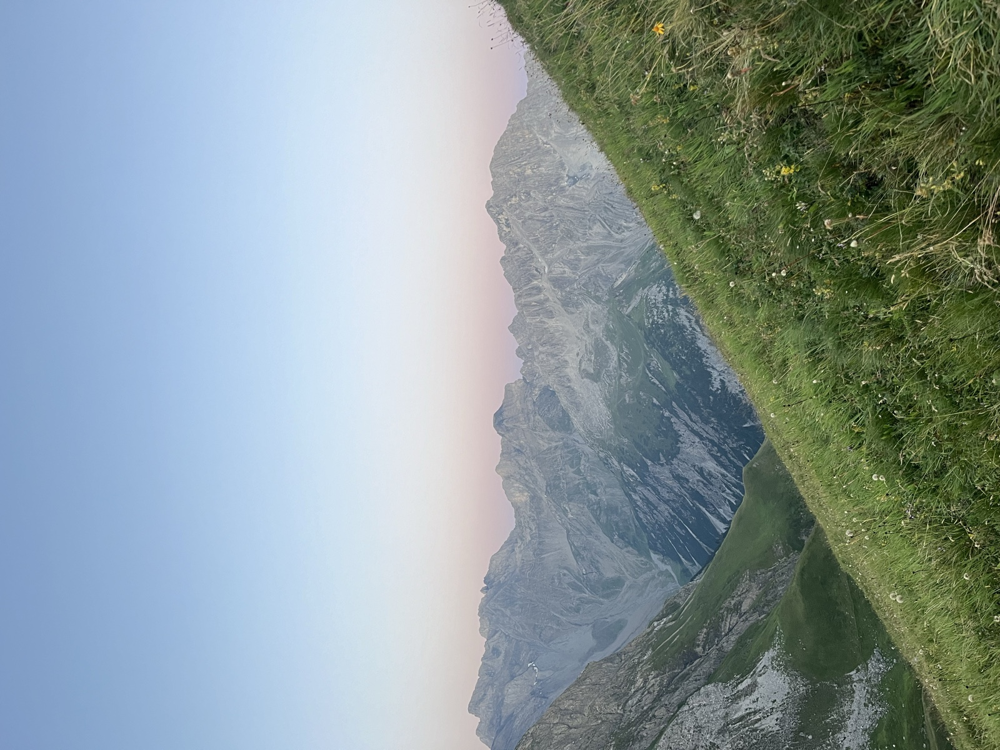
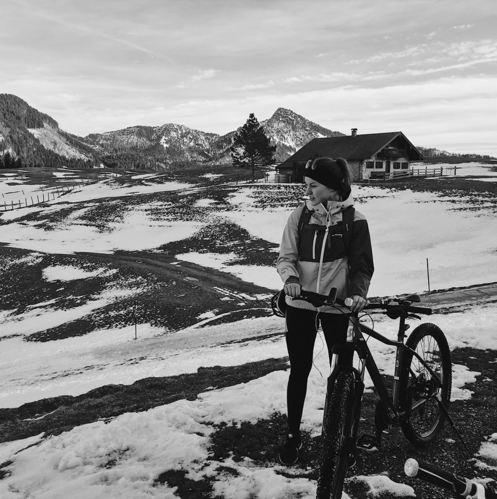

Projects

Voteasy Votecounter

Langenscheidt Language Coach

ELLA – Lifelong Learning with AI

Mobile-First Car UX

Little Food Fighters

BIRD Education Platform
UX Designer & Engineer
I am a German UX/UI Designer focused on AI in education technologies. Over the past eight years, I have worked across EdTech, automotive, the public sector and print media, with experience at companies like Audi AG.
Voteasy Votecounter
Langenscheidt Language Coach
ELLA – Lifelong Learning with AI
Mobile-First Car UX
Little Food Fighters
BIRD Education Platform
Relocation to Stavanger, Norway
UX/UI Designer for Education Technologies
Titanom Solutions · Germering, DE · Full time
UX/UI Designer for Automotive Interaction
Internship & Thesis Project · Part of Bachelor's degree
AUDI AG · Ingolstadt, DE · Full time
Graphic & UX Designer
AKKODIS · Sindelfingen, DE · Part time
Graphic & Web Designer
Kaleon Media GmbH · Rosenheim, DE · Part time
Project Manager & Graphic Designer
F&W Druck- & Mediencenter · Kienberg, DE · Full time
Bachelor of Arts in Information Design
Media University Stuttgart · Stuttgart, DE · Full time
Exchange Semester in Graphic Design & Communication
Part of Bachelor's degree
Linköping University · Linköping, SE · Full time
Dual Vocational Training in Digital & Print Media Design
Berufschulzentrum Alois-Senefelder (Studies) · Munich, DE · Part time
F&W Druck- & Mediencenter (Traineeship) · Kienberg, DE · Part time
University Entrance Qualification in Design
Upper secondary school
Städtische Fachoberschule für Gestaltung · Munich, DE · Full time
Methods
Learning Experience DesignHuman-AI InteractionAccessibilityUser ResearchUsability TestingPrototypingWorkshop Facilitation
Tools
FIGMAMIROAdobe CCHTMLCSSJavaScriptVS CodeGitHubClaude AIJiraConfluence
Courses
Product Engineer Training · 03/26 - 07/26
Titanom Solutions · Germering, DE · Internal weekly training programme
First Aid Certificate · 11/25
Titanom Solutions · Germering, DE · Corporate one-day course
Languages
German (native)English (C1)Swedish (A2)
Norwegian (A2, actively improving)
Volunteering
Volunteer FirefighterSport Shooting TrainerCultural Festival Committee Member
Interests
RunningHikingCyclingAnalog DesignHandicraft

Nature is where I can recharge, get clarity and the best experiences.

I am passionate about helping people, professionally and personally. Providing valuable information in a way it empowers others or makes them feel good, is what drives me. My off-screen time I spend outdoors. Running, cycling, hiking, camping or just relaxing at the lake. I love analogue handicraft, traditions and strolling through thrift shops.
I have recently relocated to Stavanger, Norway with my half-Norwegian partner and I am seeking a local, purpose-driven role.